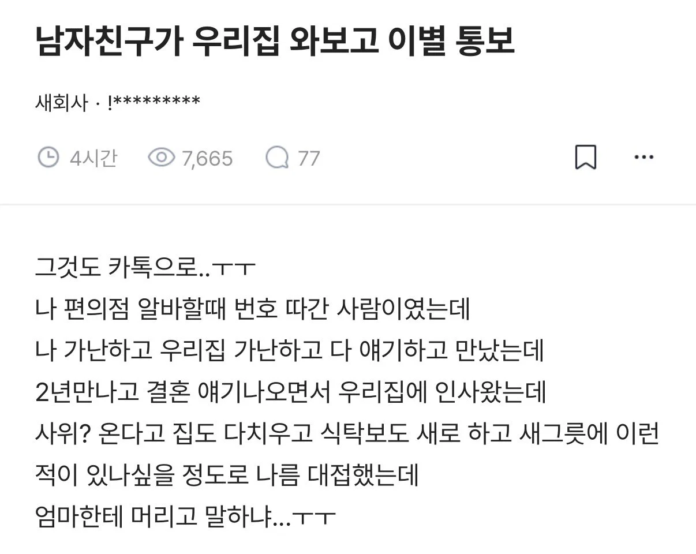

남자친구가 우리집 와보고 이별 통보 ...
댓글
부모님 너무 마음 아프겠다..
나도 결혼직전에 처음 처가댁가서 좀 놀라긴했음. 아내가 염려섞인 말로 연애중에 여러번 말하긴했는데 직접 마주하는건 다르더라. 집에 들어간것도 아니고 집밖에서 인사만함. 결혼한지 5년됐는데 아직 못들어가봄.
? 그건문제있는거아님? 처가댁을 한번도 안들어가봣다고?
그건 좀...
가난때문에 헤어지면 다시 사랑하기 힘들더라 상황이 좋아지고 연봉이 높아져도 가난했을때 받은 상처는 쉽게 아물지가 않더라..
흔히 말하잔슴 남의집 기둥은 빼오는거 아니라고..
이 말이 참 가슴 아프다
부모가 결혼 찬성해도 사촌들이 가난한 사람이랑 결혼하지말라고 명절때마다 지랄함 ㅇㅇ
주작이니까 너무 불타지들 마라
뭔가 중간과정이 너무 생략된 것 같은데?
치운다고 치웠는데 ㅈㄴ더러웠던걸까
주작 느낌이 나지만 굳이 따지자면
단순 위생상태를 말하는게 아니라 가난이 보인거겠지
주작이 아니였다면, 알고 만났는데 고작 그걸로 헤어지자 하진 않았을 듯. 분명 장인이 술 개같이 쳐 맥이는 쌍팔년도 스타일로 구는 정도가 아니였을까 싶음
주작 좆되네 진심
남자 이야기도 들어봐야지
에이 저런건 뭐 좆주작일 확률도
새회사
기생충에 나오는 송강호집 생각하며 치워도 어쩔 수 없는 절대값이 있을거같아서 마음은 아프다
꼭 가난해보여서 헤어졌다고 생각할수도있는데. 다른 이유도 많을것같아 어머님이 아버님을 휘어잡고 막말에 서열이 바뀌여서 아빠를 가장으로써 대접을 안한다던지 등등 여친을 만날때도 약간 남자를 이겨먹을려고 한다던지 그런 낌새가 있었는데 이번 방문으로 이유가 무엇인지 깨닫게 된거라든지 이유는 엄청 많지
아오.. 예전 우리형한테 있었던 일이네...
지금이야 사정 나아졌지만 그때 부모님 상심하고 형 낙심했던거 생각하면...
새회사 바코드는 걍 과학이니까 쓸떼없이 감정소모하지말자
결혼은 비슷비슷한 사람끼리
뭐 그래도 엄마가 원망스럽다 이러지 않고
걍 슬프다는거 보니까 진짜같기도 하고
이런 경우 실제로 봐서 뭘 근거로 주작이라고들 하는지 궁금하네
내가 본 케이스도 딱 저랬는데 심지어 속도위반으로 여자애가 임신 중이었음. 그래도 별걸로 다 트집 잡아서 결국 헤어지더라. 그뒤로 그새끼 안봄..
좆고딩대 경험인데, 여자는 아니고 남자애였음. 같이 놀던 친구였는데, 집안이 많이 어렵다고 하더라고. 그래도 애가 워낙 말끔하고 인성도 좋아서 친하게 잘 지냈었는데, 아마도 내가 걔 집을 처음 가봤을거임. 우연찮게 집에 방문했는데, 벽지도 듬성듬성 다 찢겨있고, 거실에 아버지? 어머니? 여동생?이 이불하나로 나눠덮고 한겨울에 덜덜 떨고 있었음. 거실같은곳 옆 작은 골방이 있었는데, 그 안에는 성경책인지 찬송가책인지 뜯어서 대마초 말아서 피우고 있던 뽕쟁이까지있더라. 나오면서 저 뽕쟁이 새낀 줘패서 쫒아내지 저걸 왜 거둬주고 있냐고 물었던 기억이있음. 난 진짜 그런 환경에서 사람이 산다는것 자체가 충격이었음. 와꾸는 진짜 지금 아이돌급이었는데, 집구석이 진짜.. 어휴...